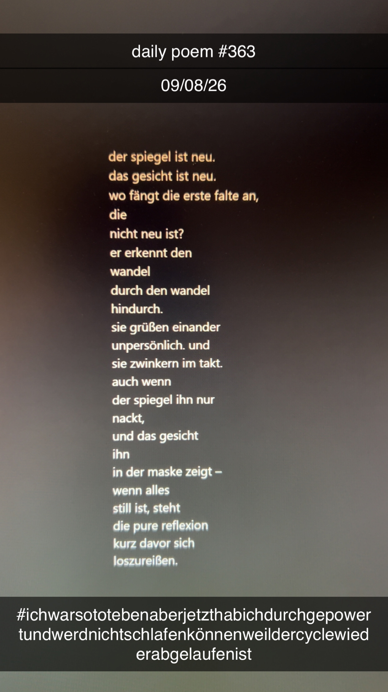

(In) Spiegeln
[363]Der Spiegel ist neu.
Das Gesicht ist neu.
Wo fängt die erste Falte an,
die
nicht neu ist?
Er erkennt den
Wandel
durch den Wandel
hindurch.
Sie grüßen einander
unpersönlich. Und
sie zwinkern im Takt.
Auch wenn
der Spiegel ihn nur
nackt,
und das Gesicht
ihn
in der Maske zeigt –
wenn alles
still ist, steht
die pure Reflexion
kurz davor sich
loszureißen.
